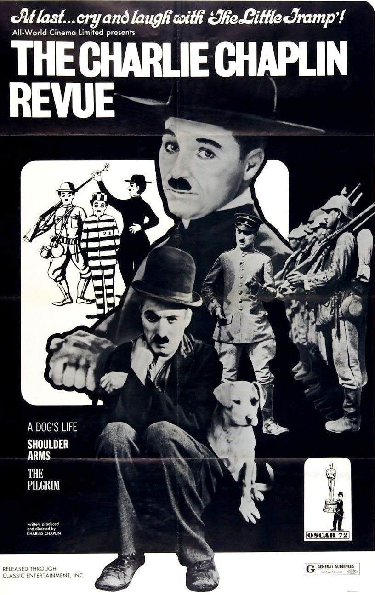
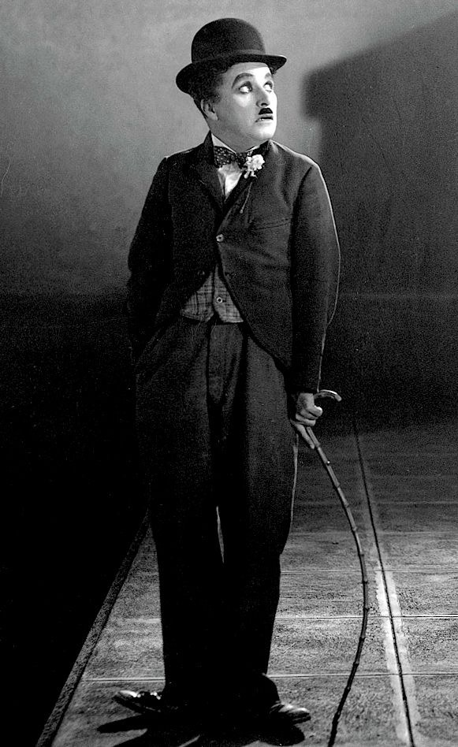
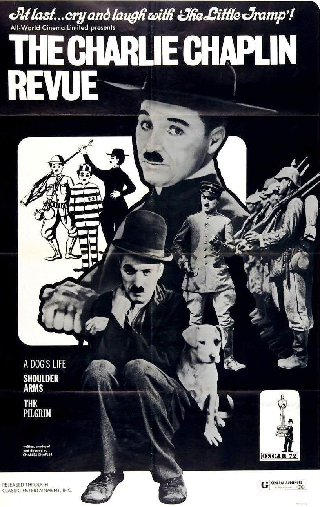
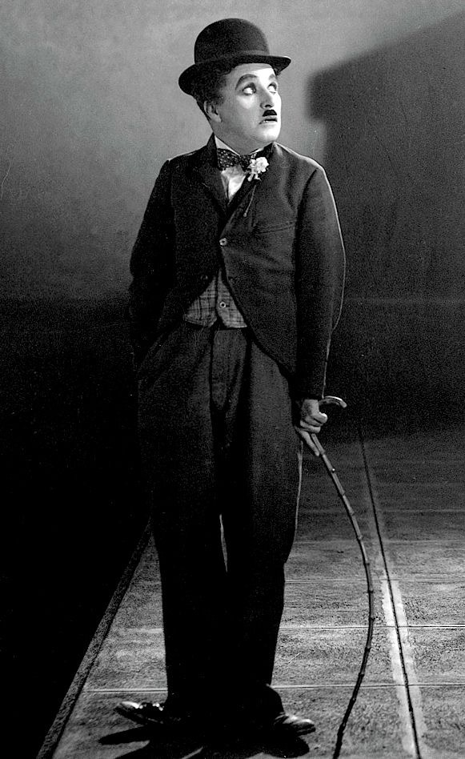

“ Remember, you can alwalys stoop and pick up nothing. “
A king in New york - 1957
Lime Light - 1952
Monsieur
Verdoux - 1947
The great dictator - 1940
Modern Times -
1936
City Lights - 1931
The circus - 1928
The Gold
Rush - 1925
A Woman of Paris - 1923
The Kid - 1921
The
Tramp - 1915
Modern Times is a 1936 American part-talkie comedy film produced,
written and dircted by Charlie Chaplin.
In Chaplins last
performance as the Iconic Little Tramp, his character struggles to
survive in the mordern,
Industrialized world. The films also
stars Paulette Goddard, Henry Bergman, Tiny Sandford and Chester
Conklin.
Modern Times has won many awards and honors, and
is widly considered one of the greatest films ever.
It was one
of the first 25 films selected by the Library of Congress for
preservation in the National Film Registry for being “culturly,
historically, or aesthetically significant” .
The Kid is a 1921 American
silent
comedy-drama film
written, produced, directed by and starring
Charlie Chaplin
, and features
Jackie Coogan
as his foundling baby, adopted son and sidekick. This was
Chaplin's first full-length film as a director. It was a huge
success and was the second-highest-grossing film in 1921. Now
considered one of the greatest films of the silent era, it was
selected for preservation in the United States
National Film Registry
by the
Library of Congress
in 2011.
City Lights is a 1931 American synchronized sound romantic comedy-drama film written, produced, directed by, and starring Charlie Chaplin . While the film has no audible dialog, it was released with a synchronized musical score with sound effects. The story follows the misadventures of Chaplin's Tramp as he falls in love with a blind girl ( Virginia Cherrill ) and develops a turbulent friendship with an alcoholic millionaire ( Harry Myers ).
A Dog's Life is a 1918 American
short
silent film
written, produced and directed by
Charlie Chaplin
. This was Chaplin's first film for
First National Pictures
. It was part of a then groundbreaking $1 million contract.
[1]
It was for a total of eight 3 reel short silent films.
A
Dog's Life is a 1918 American
short
silent film
written, produced and directed by
Charlie Chaplin
. This was Chaplin's first film for
First National Pictures
. It was part of a then groundbreaking $1 million contract.
[1]
It was for a total of eight 3 reel short silent films.
Charles
Lapworth, a former newspaper editor who had met Chaplin when he
interviewed him, took a role as a consultant on the film.
A King in New York is a 1957 British comedy film directed by and
starring Charlie Chaplin in his last leading role. The film presents
a satirical view of certain aspects of American politics and
society. It was produced in Europe after Chaplin's exile from
the U.S. in 1952 and did not open in the United States until
1972.
Deposed by revolution in his home country of Estrovia,
King Igor Shahdov comes to New York City almost broke, his
securities having been stolen by his own prime minister. He tries to
contact the Atomic Energy Commission with his ideas for using atomic
power to create a utopia.
Deposed by revolution in his home country of Estrovia, King Igor
Shahdov comes to New York City almost broke, his securities having
been stolen by his own prime minister. He tries to contact the
Atomic Energy Commission with his ideas for using atomic power to
create a utopia.
Chaplin's film advanced a stirring
condemnation of the German and Italian dictators Adolf Hitler and
Benito Mussolini, as well as fascism, antisemitism, and the Nazis.
At the time of its first release, the United States was still at
peace with Nazi Germany and neutral during what were the early days
of World War II. Chaplin plays both leading roles: a ruthless
fascist dictator and a persecuted Jewish barber.
The Great
Dictator was popular with audiences, becoming Chaplin's most
commercially successful film.[4] Modern critics have praised it as a
historically significant film, one of the greatest comedy films ever
made and an important work of satire. In 1997, it was selected by
the Library of Congress for preservation in the United States
National Film Registry as being "culturally, historically, or
aesthetically significant".[5][6] The Great Dictator was
nominated for five Academy Awards – Outstanding Production, Best
Actor, Best Writing (Original Screenplay), Best Supporting Actor for
Jack Oakie, and Best Music (Original Score).
Limelight is a 1952 American comedy-drama film written, produced, directed by, and starring Charlie Chaplin, based on a novella by Chaplin titled Footlights.[2] The score was composed by Chaplin and arranged by Ray Rasch.
The film stars Chaplin as a washed-up comedian who saves a suicidal dancer, played by Claire Bloom, from killing herself, and both try to get through life. Additional roles are provided by Nigel Bruce, Sydney Earl Chaplin, Wheeler Dryden, and Norman Lloyd, with an appearance from Buster Keaton. In dance scenes, Bloom is doubled by Melissa Hayden.Upon the film's release, critics' reception was divided; it was heavily boycotted in the United States because of Chaplin's alleged communist sympathies, and failed commercially.
However, the film was re-released in the United States in 1972, which included its first screening in Los Angeles. This allowed the two-decades-old film to be in contention for the 45th Academy Awards where Chaplin won his only competitive Oscar. Today, the film is sometimes regarded as one of Chaplin's best and most personal works, and has attained a cult following.
The production of the film was the most difficult experience in Chaplin's career. Numerous problems and delays occurred, including a studio fire, the death of Chaplin's mother, as well as Chaplin's bitter divorce from his second wife Lita Grey, and the Internal Revenue Service's claims of Chaplin's owing back taxes, all of which culminated in filming being stalled for eight months.[2] The Circus was the seventh-highest grossing silent film in cinema history taking in more than $3.8 million in 1928.[1] The film continues to receive high praise. The film's copyright was renewed, so it entered the public domain on January 1, 2024.
The Circus is a 1928 silent romantic comedy film written, produced, and directed by Charlie Chaplin. The film stars Chaplin, Al Ernest Garcia, Merna Kennedy, Harry Crocker, George Davis and Henry Bergman. The ringmaster of an impoverished circus hires Chaplin's Little Tramp as a clown, but discovers that he can only be funny unintentionally.